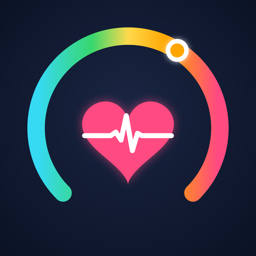

H-Rate
Your heart rate on your watch face, in color.
Contact
Questions, problems or ideas: droreli@gmail.com
Common questions
How do I add H-Rate to my watch face?Touch and hold the watch face, tap Edit, swipe to the complications screen, tap a corner and choose H-Rate. Press the Digital Crown to save.
Why is the number not updated every minute?watchOS decides how often complications refresh, usually every 15 to 30 minutes. Open the app, or tap the number in the app to take a fresh reading.
The number is gray. Why?The reading is more than 30 minutes old. Gray means "not current", so you never mistake an old value for a new one.
I see no data.On the watch, open Settings › Health › Data Access and check that H-Rate may read heart data. Wear the watch snugly for a while.
Does "measure now" add a workout?No. H-Rate runs a short sensor session and discards it. No workout and no exercise minutes are saved.
Is H-Rate a medical device?No. It shows readings your Apple Watch already takes and does not diagnose any condition. Colors are for display only.
Privacy
Nothing leaves your watch. No account, no server, no analytics, no ads. Read the privacy policy.
H-Rate
הדופק שלך בלוח השעון, בצבע.
יצירת קשר
שאלות, תקלות או רעיונות: droreli@gmail.com
שאלות נפוצות
איך מוסיפים את H-Rate ללוח השעון?לחיצה ארוכה על הלוח, "עריכה", החלקה למסך הסיבוכים, הקשה על פינה ובחירת H-Rate. לחיצה על הכתר לשמירה.
למה המספר לא מתעדכן כל דקה?watchOS קובעת באיזו תדירות סיבוכים מתעדכנים, בדרך כלל כל 15–30 דקות. אפשר לפתוח את האפליקציה, או להקיש על המספר באפליקציה למדידה חדשה.
המספר אפור. למה?המדידה ישנה מ־30 דקות. אפור אומר "לא עדכני", כדי שלא תתבלבל בין ערך ישן לחדש.
"מדוד עכשיו" מוסיף אימון?לא. H-Rate מפעיל את החיישן לכמה שניות ומבטל. לא נשמר אימון ולא נוספות דקות אימון.
H-Rate הוא מכשיר רפואי?לא. הוא מציג מדידות שהשעון כבר עושה ואינו מאבחן שום מצב.
פרטיות
שום דבר לא יוצא מהשעון. מדיניות הפרטיות.